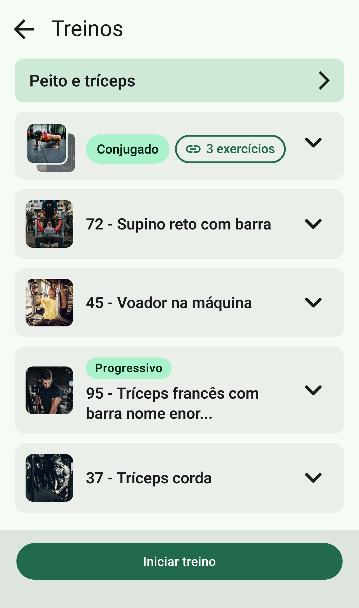
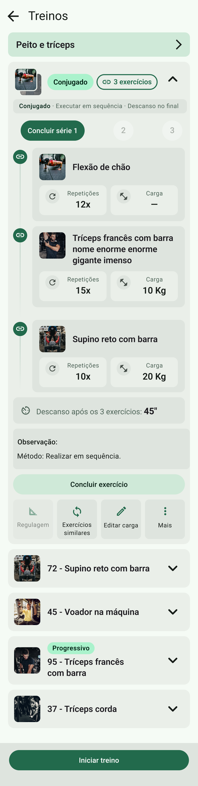
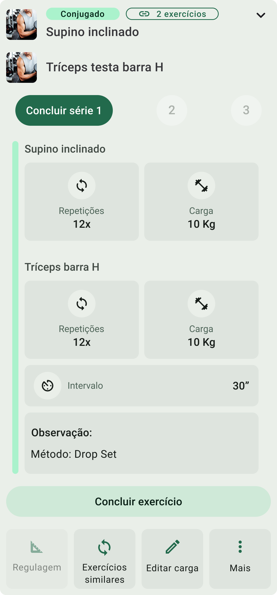

FITI / Mobile product design / 2026
Making combined exercises easier to follow.
A workout list can tell you what to do without making it clear how to do it together. I led an improvement to FITI's exercise list to make trainer-assigned combinations easier to recognize, understand, and navigate.


The challenge
FITI already identified combined exercises with a label, exercise count, and header thumbnails. Interviews and discovery showed that these cues were not enough: users did not consistently read the headers as the start of distinct movements within the group.
The information existed, but its organization did not clearly explain which movements belonged together, where to find each demonstration, or when to switch exercises and rest.
The objective
Make the trainer's intended routine easier to follow directly from the list: recognize the group, understand its sequence and rest timing, and access guidance for every movement.
My role
As the main designer for FITI's mobile app, I led the design decisions for this improvement, from research and design critiques through prototyping and developer handoff.
I worked closely with my product manager to understand gym members' needs and shape a solution for following trainer-assigned routines within the existing exercise list.

The label was not the missing piece.
The interface named the combination without making its structure sufficiently readable.
- Headers were not reliably understood as separate movements.
- Names and execution details were visually separated.
- A shared interval did not explain the full sequence.
A list of exercises is not the same as a workout sequence.
The previous flow assumed people would finish all sets of one exercise before moving on. What we observed did not always follow that model: people alternated movements within a combined routine.
This shifted the design focus from identifying combined exercises to explaining how to follow them.
Make each movement distinct
The final design retains the label and count as an overview, but no longer relies on them alone. Each movement has its own visual container, bringing its thumbnail, name, repetitions, and load together.
A connecting line preserves the relationship between the movements while the individual blocks make their boundaries explicit.
Give every exercise an entry point
Each movement has an individual thumbnail. The design connects exercises to their specific demonstration screens, making guidance available at the movement level rather than depending on a single group-level media reference.
The routine, in context
Explain sequence and rest in context
The expanded card explicitly says to perform the exercises in sequence. The rest instruction sits after the movements and specifies that it comes after all three exercises in this example.
Users no longer have to infer that relationship from a shared interval field or a general observation.
- 01 Push-up
- 02 Overhead triceps extension
- 03 Barbell bench press
- Rest 45 seconds
Working within the existing list
The improvement builds on FITI's familiar exercise list, bringing movement details and execution guidance together while preserving set completion at group level.
The layout accommodates longer exercise names and method instructions, keeping each movement distinct within more complex trainer-assigned routines.
From research to alignment
Research and design critiques shaped the direction. Close collaboration with my product manager kept decisions grounded in how gym members follow their routines.
A Figma prototype brought the interactions into design checkpoints, giving the team a shared basis for feedback and approval before handoff.
Ready for implementation
The work extended beyond the screens: updated components and a revised master file kept the new patterns part of FITI's shared design source.
Figma annotations documented interaction behavior for developer handoff, with the prototype providing context for how the screens worked together.
From a labeled group to a readable routine.
The design responds directly to the discovery finding: a label alone was not enough. Distinct movement blocks, individual media references, and explicit execution guidance make the intended routine more visible.
A clearer path from the trainer's prescription to the next movement, with exercise guidance and rest timing available where they are needed.